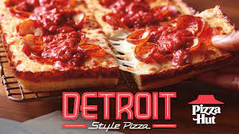

For years, Chicago was the banner city when it came to distinctly midwestern pizza. Though deep dish has long had its day, the balance of power over the past decade seems to have shifted eastward to Detroit. Now, one of the pizza world's worst-kept secrets seems poised to hit the mainstream with a bit of help from Pizza Hut.
This month, Pizza Hut is launching its mass-market take on Detroit style pizza, making it the first time that a pizza chain of its size is bringing Michigan's cheesy, saucy export nationwide. Their rectangular pies will be divided into four unique product offerings: Double Detroit Pepperoni, which loads up each pie with 80 pepperoni slices, Double Cheesy, Meaty Deluxe, and the Italian sausage, red onions, and green bell peppers of the Supremo pie.
So what sets Detroit-style pizza apart? A few things. First, there's the square or rectangular slices, made from dough that crisps up on the edges without getting too crunchy underneath. Deeper-dish than your average pizza (though not on Chicago's casserole-like level), each piece is loaded with cheese from edge to edge (for on-crust caramelization), and, most distinctively, finished off with a tomato sauce that goes on top.
Though not ubiquitous, Detroit's pizza seems to be having a moment. While pizzeria data (the best kind of data) suggests that Detroit-style's presence on menus grew more than 66 percent from 2015 through 2019, it still was only available on about 1 percent of menus that year. Thanks to the recent emergence of pizza shops from coast to coast specializing in Detroit-style, however, Pizza Hut perhaps sensed an opportunity to put it in front of a more mainstream pizza audience.
From the sound of it, Pizza Hut took a cautious approach to putting their own spin on Detroit pizza rather than rushing it into mass production. The chain claims it tested 500 different iterations before landing on their perfect pie, and Forbes mentions that the Detroit Double Pepperoni uses a new type of crispy, cupped pepperoni that's exclusive to Pizza Hut's Detroit-style pizzas. On top of that, the vine-ripened tomato sauce is a new addition for the lineup.
We got to try Pizza Hut's Detroit-style pizza ahead of time, and we're big fans of the edge-to-edge cheese and cupped pepperoni. Since there's so much crust, it's very filling (we could hardly get two slices in), meaning one whole Detriot-style pizza is more than enough to feed a family.
And in case you're worried that this hasn't earned the local seal of approval, fear not. It appears that Pizza Hut tested its Detroit-style pizza in Michigan back in the pre-pandemic days of 2020, so the fact that it's now seeing a nationwide release suggests that local connoisseurs at least weren't offended by the offering. In terms of our own internal reviewing, the pizza registers as very filling (making them a good deal at $10.99 each), and the edge-to-edge cheese drew praise as well.
Each of Pizza Hut's four Detroit pies are available now for a limited time. If you're homesick for your favorite Michigan eats or you've just ordered so much pizza over the past year that it's time to shake things up, maybe this Motor City meal is what we all need right now.